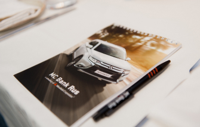
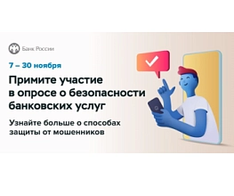
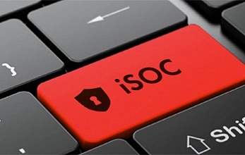
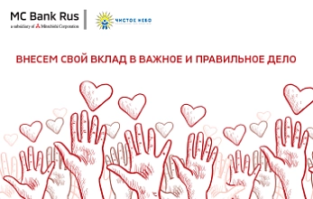
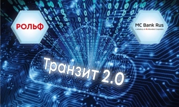

Новости МС Банк Рус

О мерах поддержки пострадавших в «Крокус Сити Холл»"
АО МС Банк Рус готов рассмотреть вопросы по урегулированию задолженности по кредитному договору погибших и пострадавших заёмщиков
Банка в террористическом акте, произошедшем 22 марта 2024 г. в "Крокус Сити Холл".
Консультацию можно получить по телефону Горячей линии Банка 88007700570, либо направить обращение на электронную почту Банка cs@mcbankrus.ru.
27.03.2024

Опрос Банка России о безопасности финансовых услуг 2023 г.
Уважаемые клиенты!
В период с 07.11.2023 по 30.11.2023 Банк России проводит онлайн-опрос в целях определения степени
удовлетворенности населения уровнем безопасности финансовых услуг, оказываемых организациями кредитно-финансовой сферы.
Опрос проводится путем заполнения электронных анкет, размещенных на сайте Банка России.
07.11.2023

Softline провела интеграцию iSOC в МС Банк Рус
Компания Softline провела интеграцию сервиса iSOC в МС Банк Рус, который позволил создать
эффективную систему мониторинга и реагирования на инциденты, а также повысить уровень информационной безопасности Банка.
Ранее в MC Банк Рус функционировала иная система, поставщик которой ушел с российского рынка.
«Внедрение iSOC позволило заказчику минимизировать риски несанкционированного проникновения в инфраструктуру,
что является критически важным моментом для такого требовательного к безопасности сектора, как банковский. Реализация проекта
также позволила разгрузить специалистов заказчика, передав часть задач по кибербезопасности Softline. Благодаря этому заказчик не
только обезопасил свою инфраструктуру, но и смог сэкономить ресурсы: как финансовые, так и кадровые», – отметил Андрей Медведев,
Руководитель отдела по развитию кибербезопасности Softline.
26.04.2023
С 1 апреля МС Банк Рус перешел на кадровый электронный документооборот, реализованный с привлечением IT-компании «Тензор».
Около 200 работников Банка теперь подписывают и принимают кадровые документы в личном кабинете СБИС* на своем ПК или смартфоне.
Сервис СБИС КЭДО** позволяет обмениваться электронными кадровыми документами между HR-специалистами и сотрудниками.
Трудовые договоры и дополнительные соглашения к ним, заявления, инструкции, внутренние нормативные документы подписываются электронной подписью
с устройства и хранятся не на бумаге, а в электронном архиве.
«Внедрение КЭДО в Банке – непростая задача, особенно с точки зрения безопасности. Но СБИС, по мнению клиента, полностью
подошел по всем критериям. Для нас это не первый опыт внедрения кадрового ЭДО в банке. Поэтому уже знаем, что от нас хотят клиенты.
Все наши лучшие наработки мы собрали в один проект и при этом учли пожелания заказчика. Например, в Банке реализованы уникальные пользовательские заявления.
Также было важно хранить документы не только в облаке, но и иметь архив на своем локальном сервере. Помог – СБИС Архив. Список наших удачных проектов и знаний
стал больше. Надеемся на дальнейшее успешное взаимодействие с МС Банк Рус», – рассказал руководитель проекта СБИС Михаил Ефимов.
11.04.2023
Уважаемые клиенты Банка!
Настоящим информируем, что теперь возможно погашать кредит без комиссии через платежную систему
«Золотая Корона» в салонах сотовой связи Билайн (ПАО «Вымпелком») и Мегафон (АО «Мегафон Ритейл»).
При внесении платежа необходимо предоставить паспорт гражданина РФ, номер банковского счета и БИК Банка.
Перечень точек погашения указан на сайте www.koronapay.com. Зачисление денежных средств производится на следующий
рабочий день.
03.04.2023
МС Банк Рус внедрил функционал по удаленной идентификации физического лица через Единую биометрическую систему (ЕБС).
Благодаря этому открыть счет в Банке можно будет без посещения офиса с использованием интернет-банка.
Для получения услуги в Банке физическому лицу необходимо зайти на сайт Банка и выбрать раздел «Биометрия».
Далее необходимо пройти авторизацию в ЕСИА и подтвердить свои биометрические данные с помощью смартфона, планшета,
ноутбука или стационарного компьютера с камерой и микрофоном. Для подтверждения своих биометрических данных с мобильного
устройства необходимо скачать мобильное приложение ЕБС. Приложение доступно для скачивания в Google Play и App Store.
01.11.2022
Уважаемые клиенты,
с 10 октября 2022 г. в МС Банк Рус обновляет перечень страховых компаний, соответствующих требованиям Банка к
страховым компаниям и условиям предоставления страховых услуг.
Обновленный список страховых компаний следующий:
СПАО «Ингосстрах»
САО «РЕСО-Гарантия»
АО «АльфаСтрахование»
АО «Тинькофф Страхование»
ПАО «Группа Ренессанс Страхование»
ПАО «САК «ЭНЕРГОГАРАНТ»
АО «МАКС»
ООО «СК «Согласие»
АО «Совкомбанк Страхование»
АО «ОСК»
СПАО «Ингосстрах»
САО «РЕСО-Гарантия»
АО «АльфаСтрахование»
АО «Тинькофф Страхование»
ПАО «Группа Ренессанс Страхование»
ПАО «САК «ЭНЕРГОГАРАНТ»
АО «МАКС»
ООО «СК «Согласие»
АО «Совкомбанк Страхование»
АО «ОСК»
10.10.2022
АО МС Банк Рус возобновил выдачу кредитов на приобретение автомобилей с пробегом и предлагает ставку 15,5% годовых1.
Предложение действует как на Mitsubishi с пробегом, так и на другие модели.
Условия представления кредита по ставке 15,5%1:
максимальный возраст автомобиля в год окончания срока кредита – 15 лет с года изготовления автомобиля;
первоначальный взнос по кредиту – от 20% от стоимости автомобиля;
срок кредита 60 месяцев;
два документа2;
ставка не зависит от оформления полиса КАСКО
максимальный возраст автомобиля в год окончания срока кредита – 15 лет с года изготовления автомобиля;
первоначальный взнос по кредиту – от 20% от стоимости автомобиля;
срок кредита 60 месяцев;
два документа2;
ставка не зависит от оформления полиса КАСКО
15.09.2022

МС Банк Рус начинает сотрудничество с благотворительным фондом «Чистое небо»
Благотворительный фонд «Чистое небо» уже более 12 лет оказывает помощь детям-сиротам, инвалидам, детям из многодетных и малообеспеченных семей.
Теперь при оплате кредита онлайн на сайте или в мобильном приложении МС Банк Рус клиентам предоставляется возможность совершать пожертвования
в благотворительный фонд «Чистое небо». Пожертвования осуществляются по желанию клиента путем округления суммы к оплате до следующих
100 рублей, а разница направляется в фонд.
30.08.2022

РОЛЬФ и МС Банк Рус наладили обмен данными через мультибанковскую платформу НРД
РОЛЬФ начал получать выписки по счетам, открытым в МС Банк Рус, при помощи цифровой платформы «Транзит 2.0» Национального расчетного депозитария (НРД).
Мультибанковская платформа используется для обмена финансовыми сообщениями между компаниями и банками. Она позволяет
с большим удобством оптимизировать финансовые потоки, работать со всеми банками-партнерами через единый интерфейс, а также
помогает упростить процесс получения данных и снимает с компании необходимость создания и обслуживания собственного ИТ-решения.
Таким образом, сервис обеспечивает компании и банку единый централизованный канал обмена электронными документами.
08.08.2022